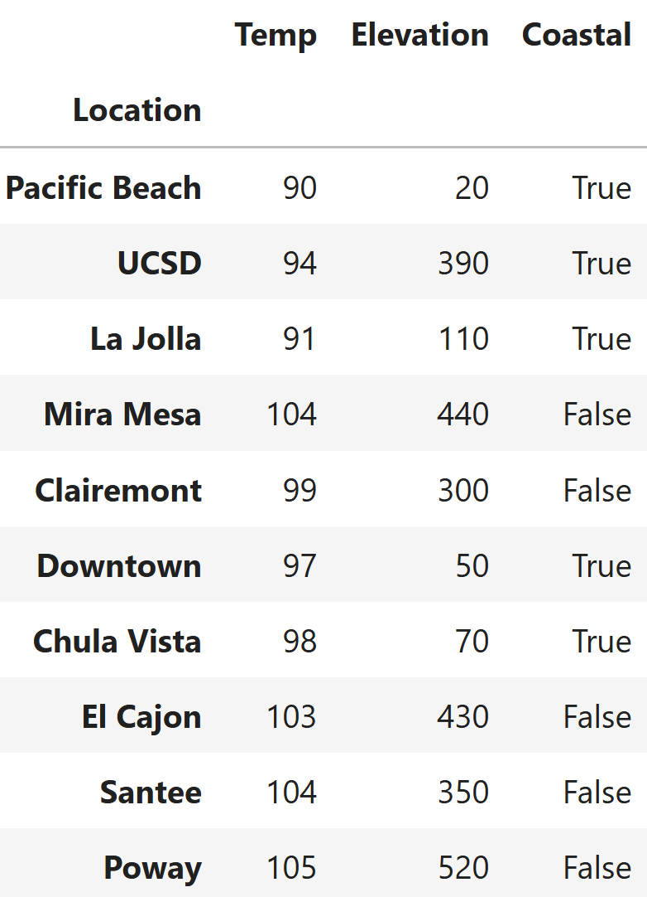
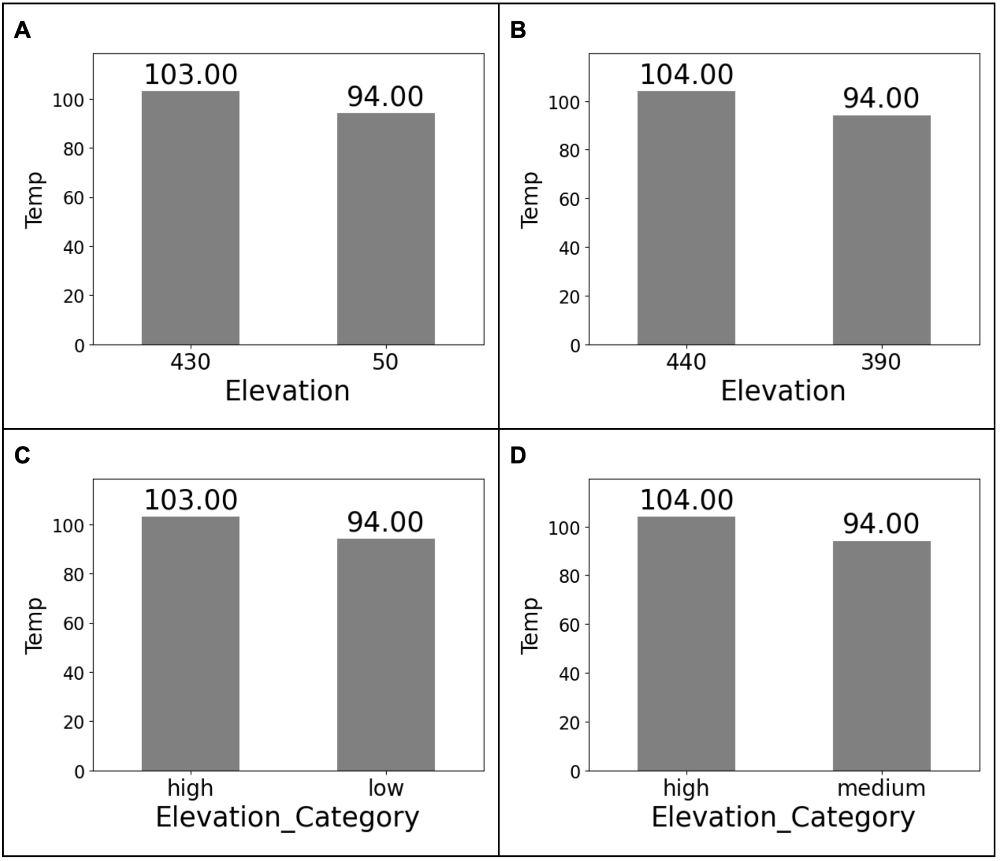

← return to practice.dsc10.com
Instructor(s): Janine Tiefenbruck, Peter Chi
This quiz was administered in-person. Students were allowed one page of double-sided handwritten notes; students were not allowed to use the DSC 10 Reference Sheet. Students had 20 minutes to work on the quiz.
This quiz covered Lectures 6-9 of the Fall 2026 offering of DSC 10.
Sujal, Austin, and Rishika cleared their schedules on October 3rd, only to realize that San Diego had become an oven that day, with temperatures crossing 100°F.
The DataFrame oct3 contains information on 10 various San Diego locations on that date. It is indexed by "Location". Its columns are "Temp" (int), the high temperature for the day; "Elevation" (int), the elevation in feet; and "Coastal" (bool), whether the location is coastal.

Assume we have already run import babypandas as bpd and import numpy as np.
If your answer is a string, put it in quotes. If your answer is a float, include a decimal point. No calculators and no computers were allowed.
Sujal wants to see whether locations at higher elevations are cooler. Assume that he has already defined a function called elevation_category, which takes in an integer elevation in feet and returns "low" when the elevation is at most 100, "medium" when it is greater than 100 and at most 400, and "high" otherwise.
Write one line of code to create a DataFrame oct3_cat, which contains every column in oct3, plus a new column named "Elevation_Category" with the appropriate categorical label, "low", "medium", or "high".
Answer:
oct3_cat = oct3.assign(Elevation_Category=oct3.get("Elevation").apply(elevation_category))
The average score on this problem was 81%.
Which bar chart is produced by the following code? Bar heights are labeled for your convenience.
(oct3_cat
.drop(columns=["Coastal"])
.take(2 * np.arange(3) + 1)
.take(np.arange(2))
.groupby("Elevation_Category")
.mean()
.plot(kind="bar", y="Temp"))
A
B
C
D
Answer: D.
The average score on this problem was 64%.
For this question, assume oct3_cat was correctly created in Question 1.
Write one line of code that evaluates to a DataFrame containing the average temperature associated with each combination of values in the "Elevation_Category" and "Coastal" columns.
Answer:
oct3_cat.groupby(["Coastal", "Elevation_Category"]).mean().get(["Temp"])
The average score on this problem was 82%.
Determine the output of the code cell below.
legend = bpd.DataFrame().assign(
Elevation_Category=["low", "medium", "high"],
Color=["yellow", "orange", "red"])
oct3_cat.merge(legend, on="Elevation_Category").shape[0]3
9
10
13
30
Answer: 10
The average score on this problem was 70%.
Determine the output of the code cell below.
legend2 = bpd.DataFrame().assign(
Elevation_Category=["low", "medium", "medium", "high"],
Color=["yellow", "orange", "red", "maroon"])
oct3_cat.merge(legend2, on="Elevation_Category").shape[0]10
12
14
16
20
Answer: 14
The average score on this problem was 64%.
Rishika makes a density histogram of the 10 values in the "Temp" column of oct3, shown above. She uses the argument bins = np.arange(90, 110, 5). What is the height of the tallest bar?
Answer: 0.08
The average score on this problem was 29%.
Rishika then obtains a larger DataFrame of 200 locations. A density histogram of temperatures from this larger DataFrame of 200 locations has bins and heights given below. Assume all locations’ temperatures fall between 80°F and 110°F, inclusive.
| Bin | Height of Bar |
|---|---|
| [80,90) | 0.02 |
| [90,95) | 0.04 |
| [95,100) | 0.06 |
| [100,110] | X |
What is the value of X?
Answer: 0.03
The average score on this problem was 66%.
How many of the 200 locations have a "Temp" in [90,100)?
Answer: 100
The average score on this problem was 61%.